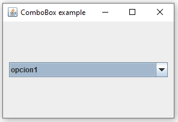

Como crear un menu desplegable de seleccion y asignar acciones al elegir una opción.
Para crear un JComboBox, lo hacemos así:
String[] opciones = { "opcion1", "opcion2", "opcion3"};
JComboBox combo = new JComboBox(opciones);NOTA: Para usar el JComboBox tenemos que tener el siguiente import:
import javax.swing.*;
El parametro que le indicamos al crear el JComboBox es un array de strings que serán las opciones que figuren en el JComboBox.
Una vez tenemos creado el ComboBox lo introducimos en nuestro contenedor:
contenedor.add(combo, gridConstraints);El primer parametro es el componente que vamos a introducir y el segundo las propiedades del GridBagLayout para posicionar el elemento dentro del layout del contenedor.
Para asociar el evento de seleccionar un elemento del ComboBox a una función usaremos un ActionListener:
combo.addActionListener(new ActionListener(){
public void actionPerformed(ActionEvent e){
System.out.println(combo.getSelectedItem());
}
});El código completo de la aplicación es el siguiente:
import java.awt.*;
import java.awt.event.*;
import javax.swing.*;
public class ComboBox extends JFrame {
public ComboBox() {
Container contenedor = getContentPane();
contenedor.setLayout(new GridBagLayout());
GridBagConstraints gridConstraints = new GridBagConstraints();
gridConstraints.gridx = 0;
gridConstraints.gridy = 0;
gridConstraints.weightx = 1.0;
gridConstraints.weighty = 1.0;
gridConstraints.fill = gridConstraints.HORIZONTAL;
gridConstraints.insets = new Insets(10, 10, 10, 10);
String[] opciones = { "opcion1", "opcion2", "opcion3"};
JComboBox combo = new JComboBox(opciones);
contenedor.add(combo, gridConstraints);
combo.addActionListener(new ActionListener(){
public void actionPerformed(ActionEvent e){
System.out.println(combo.getSelectedItem());
}
});
pack();
setVisible(true);
setResizable(true);
setSize(300, 200);
setTitle("ComboBox example");
setDefaultCloseOperation(EXIT_ON_CLOSE);
}
public static void main(String[] args) {
new ComboBox();
}
}Para añadir nuevos elementos a un ComboBox que ya está creado lo hacemos con el metodo addItem, pero tenemos que pasarle un objeto de un tipo concreto que tenemos que crear nosotros, la clase tiene que ser tal que así:
class ComboBoxOption
{
private String key;
private String value;
public ComboBoxOption(String option)
{
this.key = option;
this.value = option;
}
@Override
public String toString()
{
return key;
}
public String getKey()
{
return key;
}
public String getValue()
{
return value;
}
}Una vez tenemos esa clase podemos añadir nuevos elementos al ComboBox de la siguiente manera:
combo.addItem(new ComboBoxOption("Value 2"));Mostrar por la consola la opcion seleccionada en el combobox pero en vez de mostrarla al hacer la selección en el combo se mostrará al pulsar el boton "Mostrar seleccion"
Java | Swing | JComboBox